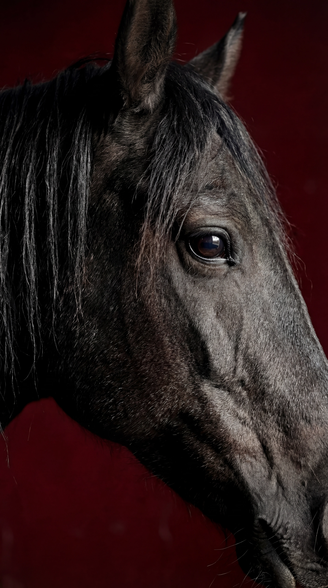
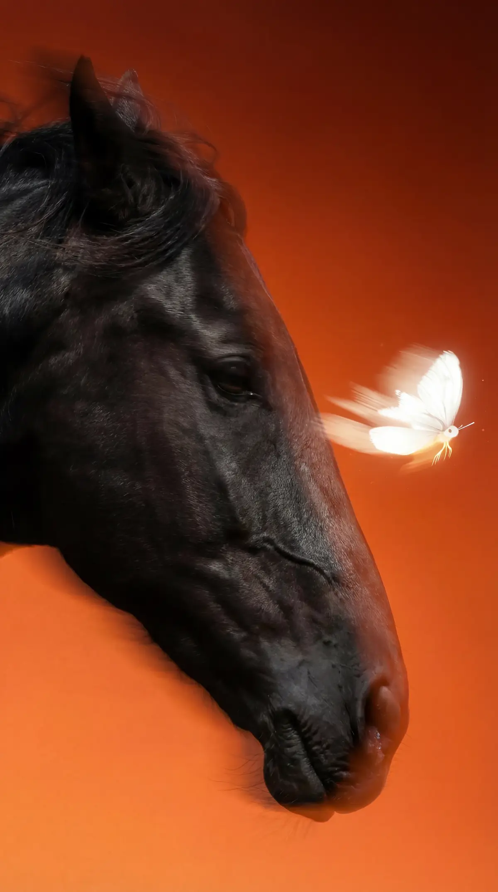
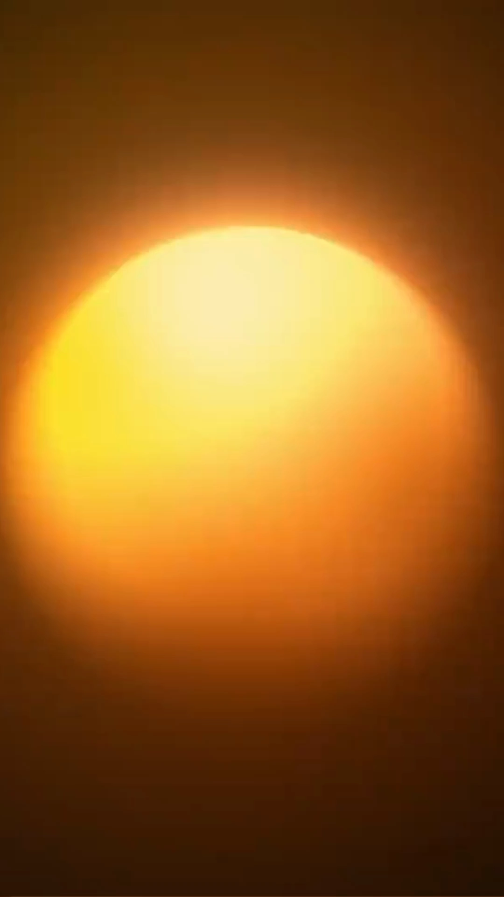
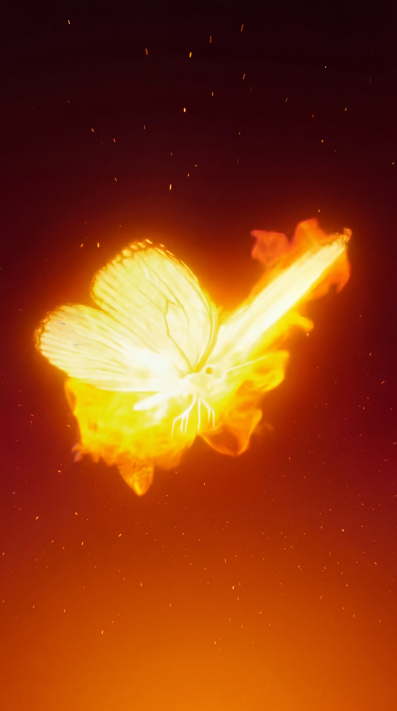
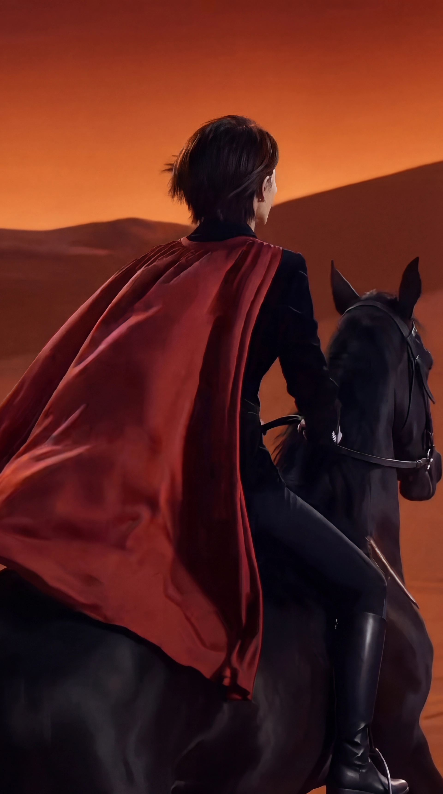
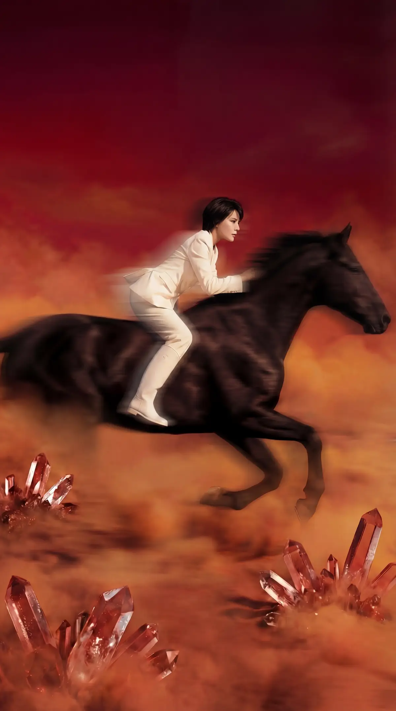
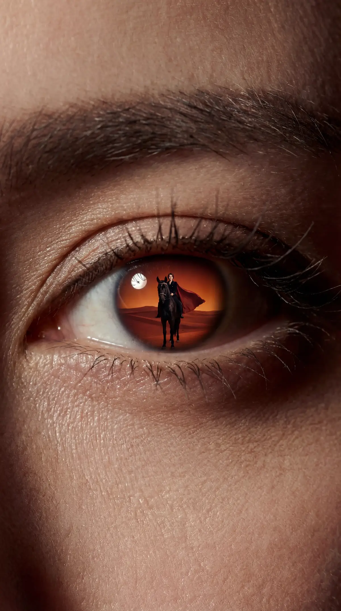

创意与叙事
确定主题、预告信息与三幕节奏，撰写分镜脚本，让每段画面承担明确的传播任务。
为时大漂亮IP制作的新身份视觉预告片
我的角色 / 项目导演 · 视觉总监


《3月14日 新征程》 / 9:16 视觉预告片
项目背景与创作任务
这是为时大漂亮个人IP制作的35秒视觉预告片，围绕3月14日的新身份发布展开。项目需要在短时间内建立独立、自信的形象，并让观众记住人物与发布节点。
我将「重新出发」转成一条可见的视觉递进：从目光和人马关系进入，以骑乘与玻璃破界放大行动，最后回到日期、身份期待与人物肖像。新身份的具体内容留待后续发布。
我的责任
确定主题、预告信息与三幕节奏，撰写分镜脚本，让每段画面承担明确的传播任务。
定义红黑金色盘、人马图腾和服装递进，规划关键帧、破界变装与眼眸尺度转场。
把控AI影像的筛选与整合，监制剪辑、调色与声音设计，检查人物识别、动作衔接和字幕阅读。
快手播放量项目方提供
视觉预告片两份成片交付
片中发布预告节点见证漂亮新身份
创作策略围绕三个判断展开：观众先认出谁，如何感受到这次变化，最后需要记住什么。
以时大漂亮核心粉丝为起点，用正脸、目光与人马肖像保持人物记忆；对新观众，用清楚的日期与身份预告说明作品用途。
围绕独立与重新出发，将「奔腾、飞扬、勇敢、热烈」对应到骑乘、破界和披风，让语言与视觉动作共同递进。
前段建立态度，末段释放「3月14日」「见证漂亮新身份」。情绪高潮之后回到人物，让预告信息与IP识别一起留下。
开场用闭目到直视的微动作集中注意，随后才进入马鬃与主题字幕。这让人物识别先成立，也为后面的动作和特效留下升级空间。
前段保持低信息量，后段再增加骑乘、玻璃与环境的视觉密度。可用前3秒留存、段落反馈与预告相关评论检验这个判断；播放量本身不能证明留存机制。
成片采用情绪递进的三幕组织。人物态度通过动作与意象展开，环境画面作为情绪蒙太奇，最后回到发布任务。
正脸、马鬃与抚马连接人物和图腾。先让观众认出人，再理解「许我一匹马吧」的愿望。
01 / RECOGNITION闭目到直视之后，主题短句进入马鬃画面。黑马、白蝶、蹄部与抚马逐步构成人马关系，这一段为骑乘行动做准备。
白衣骑乘进入玻璃破界，转成黑衣红披风。「勇敢」成为可见事件，环境意象再扩展前路的想象。
02 / TRANSFORMATION「奔腾、飞扬、勇敢、热烈」形成递进。玻璃破界是视觉转折；火蝶、熔岩与海浪是情绪蒙太奇，随后回到「许我漂亮的出发吧」。它们不构成一次连续穿越。
动作收束后出现3月14日与新身份预告。眼眸尺度转场回到正脸，黑金人马肖像完成IP落版。
03 / ANNOUNCEMENT日期与「见证漂亮新身份」是末段的传播信息。新身份的具体内容没有在片中揭示；眼眸倒影与最后肖像让前段的场景重新归于人物。
认出人物感受变化记住发布
十组镜头覆盖人物识别、行动递进与预告落版。切换镜头可对照起幅、落幅、导演判断与脚本调整。
CUT 01 / APPROX. 0–2.2 S
先集中注意并建立人物识别，再引出主题与马的图腾。

01 / HORSE暗色轮廓 · 行动的力量02 / BUTTERFLY白蝶与光迹 · 轻盈的对照VISUAL POSITIONING & SYMBOLS
马是全片的核心图腾，连接自由、力量与奔赴。以局部触感进入，再扩展到骑乘与并肩，让史诗场景始终围绕人物展开。
白蝶与流光为暗色马体增加轻盈对照，避免力量表达过于厚重。后段火蝶延续这一意象，用视觉温度变化衔接未知前路。
红披风是造型与运动之间的连接点。流动面料扩大动作幅度，红与黑形成明确对比，让人物的力量感在远景中继续可见。



THE TURNING POINT
创意以撞碎圆形玻璃承载「勇敢」，并把造型切换放在破碎平面之中。白衣、碎片、黑衣红披风形成清晰的状态递进，执行重点是保持人物轮廓与动作方向。

STATE 01白衣与暗色马体 · 建立轻盈起点上方以原始设计关键帧展示三种状态；成片中的破界、空中变装与运动衔接可通过对应片段核对。
人马全景缩为眼眸中的倒影，再拉远露出人物正脸。用场景与面部的尺度反差完成转场，让宏大征程回到人物，并承接「踏上新征程」。

把人马场景嵌入瞳孔，让眼眸成为两个空间的连接点。拉远到面部后，人物重新占据视觉中心，为最终肖像完成衔接。
设计重点是保持倒影中的主体可辨认，并让拉远后的脸部稳定。主题字幕与最终肖像共同完成预告后的收束。
特写建立情绪与触感，全身骑乘表现行动，远景释放空间。光影与造型随景别变化，最终以黑金肖像呈现从容的气场。
以细密毛发的高光对照暗色马体，让局部拥有可感知的质地。轮廓光明确运动方向，特写先建立触感，再进入更大的动作场面。
圆形玻璃组织腾跃姿态，琥珀碎片形成外围动势。亮度集中在破界处，暗色马体与红披风保持轮廓，让人物承担画面的中心。
白衣转为黑衣红披风，结尾再以黑色西装、珠宝和金色马具收束。面料、肤色与金属形成层次，稳定肖像承接前段的动作张力。
面部与细节 / 人马关系 / 骑乘行动 / 环境远景 / 肖像回扣
开场的微动作集中注意，侧面跟随强化速度，破界的慢动作突出转折；全景进入眼眸，再拉远到面部，形成景别与主体的回扣。
白与金建立前段的轻盈，黑与红加重高潮段落的力量，结尾以黑金回归人物。青蓝海浪短暂打断暖色，形成环境段落的冷暖变化。
深红环境与红披风连接不同段落，让造型变化保持同一情绪基调。
许我奔腾 · 许我飞扬 · 许我勇敢 · 许我热烈
主题短句先推进动作，「不管」引入态度，日期与身份信息最后出现。相同句式维持阅读节奏，重要字幕避开高光和碎片密集区，为小屏观看保留清晰度。
按关键帧规划、动态生成、镜头筛选与后期整合整理制作链路。文件夹中的变装、环绕、落地奔跑与扫光候选，呈现了动态方案的探索。
比较人马进入玻璃平面的位置、破碎时机与造型切换。核心取舍是让突破动作清晰，同时控制碎片对面部和马体的遮挡。
按分镜统一人物特征、造型、光影与字幕空间，确定镜头的起落状态。
围绕腾跃、变装和跟随组织动态，检查人马比例、蹄部接地与接触关系。
比较人物稳定性、动作清晰度与背景干扰，优先保留能承担叙事的镜头。
衔接景别和速度，统一色彩与字幕层级，并配合声音规划完成视听收束。
保留56份去重候选，展示变装、运镜、人物互动与环境意象的探索。
素材清单暂时无法读取，请重新打开页面。
资料包括2份成片、71个镜头视频文件、79张镜头目录图片与2份文字脚本。镜头视频去重后为56份，按场景分类保留，便于比较方案与复用素材。
下载完整素材清单前期方案与最终画面有四处重要变化。原始意图延续到成片中，具体表达通过符号、动作和转场重新组织。
黑马侧脸与鼻腔喷气，强调野性和呼吸感。
白蝶与流光掠过黑马，后接圆形金光。力量感保留在马体轮廓中，白蝶增加轻盈的对照。
黑衣红披风人物策马越过火海，视觉进入高潮。
人马撞碎琥珀色圆形玻璃，在碎片中完成白衣到黑红造型的切换，让「勇敢」对应一次具体突破。
熔岩与深海漩涡的快速蒙太奇，交代前路艰难。
火蝶、熔岩、荒漠与海岸浪涌构成意象蒙太奇，再回到出发宣言。冷暖与运动变化扩大前路想象，为人物态度作铺垫。
瞳孔倒影与眨眼动作相接，转至人物正脸。
人马全景缩为眼眸倒影，再拉远到正脸。尺度反差承接征程意象，「踏上新征程」字幕与人物肖像完成收束。
三幕叙事落实为建立、展开、收束三个节奏阶段。声音方案以史诗管弦乐为方向，让动作高点、环境变化与最终肖像各有层次。
以面部微动作和马体细节降低画面密度，先建立人物与主题，再进入骑乘行动。
跟随、慢动作与环境快接交替出现。破界形成动作高点，蒙太奇将张力转向前路想象。
出发宣言之后给出日期与新身份，再以眼眸和肖像减缓运动，让信息与人物留在结尾。
SOUND DIRECTION / 配乐与音效规划
配乐从克制的铺垫开始，以空气感、马体局部声与蹄声建立触感，为行动段落积累节奏。
在破界动作处增强节奏与冲击，玻璃瞬态连接碎片尾音，配合慢动作延长转折的感受。
熔岩与海浪用不同低频和空间感承接未知前路。场景变化带动声场变化，让连续奇观有层次。
眼眸转场后收束音乐与环境声密度，配合稳定肖像保留停留感，让出发主题在结尾延续。
PROJECT RESULT
项目交付了带字幕与纯净两份成片，完成「重新出发」的形象表达与3月14日发布预告。快手554万播放量来自项目方提供的数据。
传播规模与具体创作机制分别评估，留存、涨粉及转化数据尚待补充。35.3秒、9:16竖屏视觉预告。带字幕版负责信息表达，纯净版保留完整画面供后续适配。
人马图腾、白衣到红黑造型、玻璃破界与黑金肖像形成统一的形象语言；原始关键帧可用于进一步制作宣传物料。
十组分镜、79张静态素材与56份去重候选视频，保留了从镜头规划到动态筛选的过程依据。
554万播放量为已知项目数据。参考PPT中的互动、涨粉、完播与平均观看数据，以及热榜、媒体报道和商业机会，尚未确认是否为实际记录，因此暂不作为成果展示。
PROJECT HIGHLIGHTS & LEARNINGS
人物识别、态度表达与发布期待三项任务决定叙事顺序。画面的价值在于帮助观众理解这次IP变化。
将「勇敢」落实为玻璃破界，把造型切换放在同一个动作中，使视觉高潮与主题表达相互支持。
候选筛选持续检查面部、动作方向和特效遮挡。场景不断变化，最终仍以人物肖像完成识别。